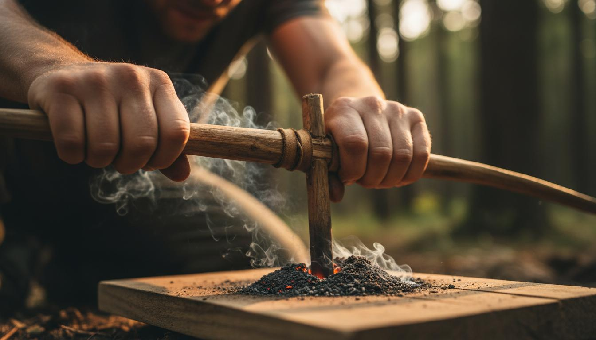

Accendi il tuo Fuoco
L’archetto come specchio.
Tre ore, le mani e il fuoco. Guardi come reagisci quando qualcosa non viene subito — e torni a casa con un’azione, non con un’idea.
Forzi, quando dovresti assecondare?
Quando qualcosa non funziona, la prima reazione è spingere di più. Stringere i denti, alzare il ritmo.
Ma a volte la strada non è forzare: è cambiare gesto. L’archetto — un modo antico di fare fuoco — te lo mostra con le mani.

Tre ore tra le mani e il fuoco.
Ti siedi in cerchio. Ti mostro come funziona l’archetto. Poi provi tu. La brace non arriva subito, il braccio si stanca, la frustrazione sale. È lì che inizia il lavoro.
Non ti dico cosa fare. Ti invito a notare: come reagisci quando qualcosa resiste? Forzi? Cambi tecnica? Ti fermi? Chiedi aiuto?
Alla fine il fuoco si accende. Ma il punto non è il fuoco: è quello che hai scoperto su di te mentre ci provavi. E quello te lo porti a casa.
Ogni gesto è una domanda.
Osservazione
Notare cosa succede quando incontri resistenza. Nessun giudizio, solo attenzione.
L’archetto
Una tecnica che chiede pazienza e ascolto. Metafora concreta dei tuoi progetti.
Riconoscimento
Scopri come reagisci quando le cose si complicano. È il primo passo.
Azione concreta
Non torni con un’idea. Torni con un’azione precisa, scelta da te.

Il punto non è imparare ad accendere un fuoco.
È tornare a fare esperienza.
È per te, o forse no.
Potrebbe essere per te se…
- hai un progetto che non riesci a portare avanti;
- quando le cose si complicano spingi di più — e poi ti bruci;
- vuoi capire come affronti le difficoltà;
- cerchi un’esperienza breve ma intensa;
- impari facendo, non ascoltando.
Probabilmente non fa per te se cerchi…
- slide e modelli da applicare;
- le risposte pronte di un coach;
- un corso di sopravvivenza o bushcraft;
- risultati senza metterci le mani.
Le cose pratiche.
I prossimi pomeriggi.
Gruppi piccoli, per dare spazio a ciascuno.
Date indicative, da confermare. Scrivimi per conoscere il pomeriggio esatto e la disponibilità.
Cosa è rimasto, dopo.
3 ore che hanno cambiato il mio approccio ai problemi.
— Elena, 34, Firenze
L’archetto mi ha mostrato che forzavo troppo.
— Giulia, 41, Torino
Ho portato a casa una decisione per il mio progetto. Non un consiglio: una scelta.
— Chiara, 32, Roma

Il punto non è accendere un fuoco.
È guardarti mentre ci provi.
Domande frequenti.
Serve esperienza?
No. È pensato anche per chi non ha mai acceso un fuoco senza fiammiferi.
È un workshop o un corso?
No: niente slide né modelli. C’è un’esperienza fisica e la riflessione che ne nasce.
È coaching?
No. Non ti do risposte da coach: ti offro un’esperienza e uno spazio per osservare come reagisci.
Imparerò il bushcraft?
L’archetto è lo strumento, non il fine: non è un corso di sopravvivenza.
Vuoi scoprire come affronti le difficoltà?
Scrivimi e raccontami cosa ti ha portato qui. Ti rispondo io, e capiamo insieme se questa esperienza fa per te.